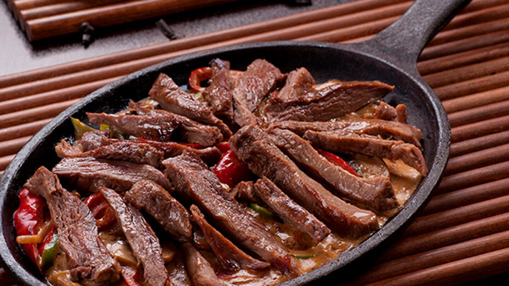

bistec

Descripcion
Esta marinada para bistec es una receta familiar que se ha desarrollado sólo durante los últimos 5 años. En este poco tiempo me ha hecho famoso en nuestro círculo cercano, pero hasta ahora nunca lo había compartido con nadie.
ingredientes
- ½ taza de aceite de oliva
- ⅓ taza de salsa de soja
- ⅓ taza de jugo de limón fresco
- ¼ de taza de salsa inglesa
- 3 cucharadas de albahaca seca
- ½ cucharadas de ajo en polvo
- ½ cucharada de hojuelas de perejil seco
- cucharadita de pimienta blanca molida
- cucharadita de ajo seco picado (opcional)
- ¼ de cucharadita de salsa picante (opcional)
Direcciones
- Coloque el aceite de oliva, la salsa de soja, el jugo de limón, la salsa inglesa, la albahaca, el ajo en polvo, el perejil, la pimienta blanca, el ajo picado y la salsa picante en una licuadora; licue a velocidad alta hasta que esté bien combinado, aproximadamente 30 segundos.